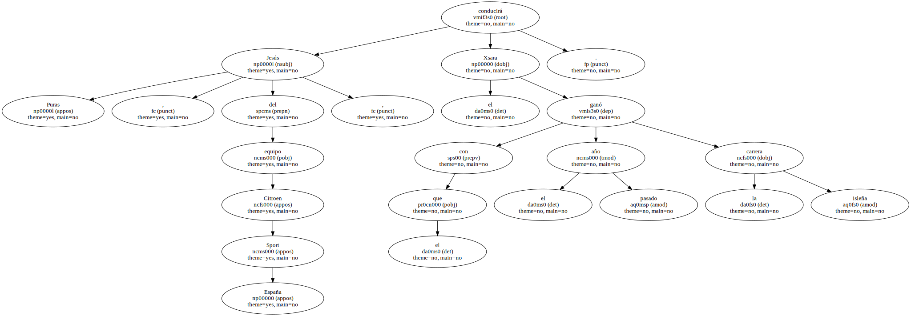
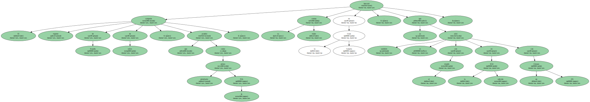
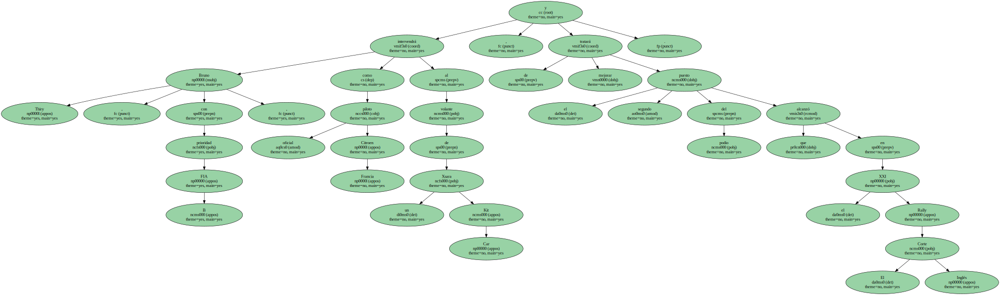
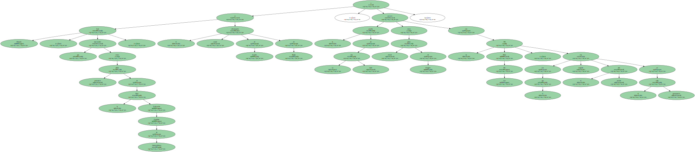
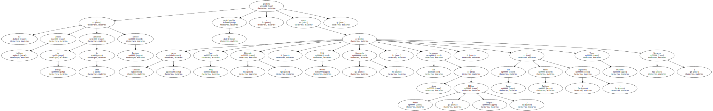
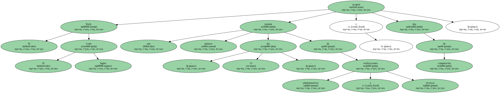

El piloto cántabro Jesús Puras , el belga Bruno Thiry y el canario Luis Monzón se han inscrito para la vigésima cuarta edición del Rally El Corte Inglés , prueba con los máximos coeficientes para los campeonatos de España y Europa de la especialidad.

Jesús Puras , del equipo Citroen Sport España , conducirá el Xsara con el que ganó el pasado año la carrera isleña.
El vigente campeón de España de rallys , que acudirá como piloto prioritario FIA B , buscará su triple corona en la Gran Canaria , ya que también se alzó con el triunfo en la XXI edición con un Citroen ZX.
Bruno Thiry , con prioridad FIA B , intervendrá como piloto oficial Citroen Francia al volante de un Xsara Kit Car , y tratará de mejorar el segundo puesto del podio que alcanzó en el XXI Rally El Corte Inglés.
Luis Monzón , que intervendrá como piloto prioritario de la Real Federación Española de Automovilismo , es el actual subcampeón de España de Rallys , y correrá la prueba de su isla natal como piloto oficial de Peugeot con un 306 Maxi Kit Car , con el que fue segundo el pasado año en el rally grancanario.
El piloto italiano y campeón de Europa de 1999 Enrico Bertone gestiona su participación , como también lo hacen Bert Jong ( Holanda ) , Erik Weber ( Alemania ) , los hermanos Jasen y Dilian Popov ( Bulgaria ) , Ian Greer y Mikel Pattison ( Inglaterra ) y Tosm Monsem ( Noruega ).
El Rally El Corte Inglés acogerá una primera jornada - día 13 - de verificaciones administrativas y técnicas , y dos de competición.
